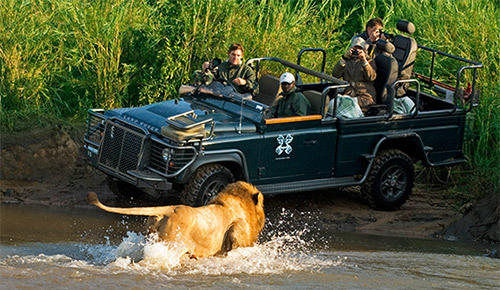
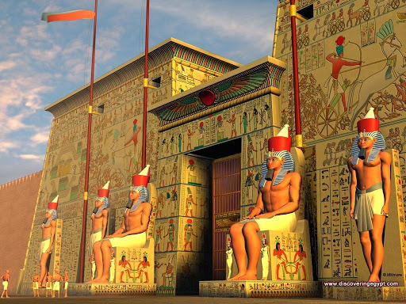
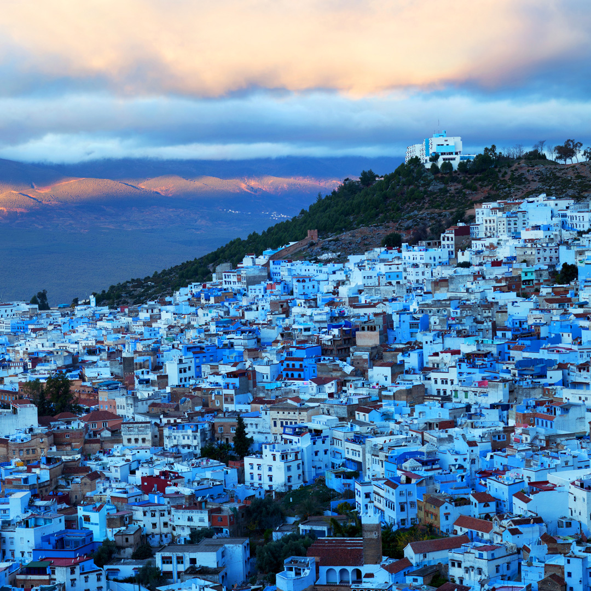

See the following Top Five best places across Africa Continent

kruger-national-park
Location: Northeastern South Africa.
Best Time to Visit: May-September.
Info: One of Africa's largest game reserves, known for the Big Five and exceptional wildlife safaris.

Luxor-Temple
Location:Luxor,Egypt
Best Time to Visit:October TO September
Info:It's an ancient Egyptian temple complex that was built around 4000 BC,during the New Kingdom Period.This temple is dedicated to God Amun

Morocco_ChefchouenAerial
Location: Rif Mountains.
Best Time to Visit: March-May or September-November.
Info: A picturesque town famous for its blue-washed streets and laid-back atmosphere.

mount kenya
Location: Central Kenya.
Best Time to Visit: January-February or July-September.
Info: Africa’s second-highest peak, ideal for hiking and exploring diverse ecosystems.